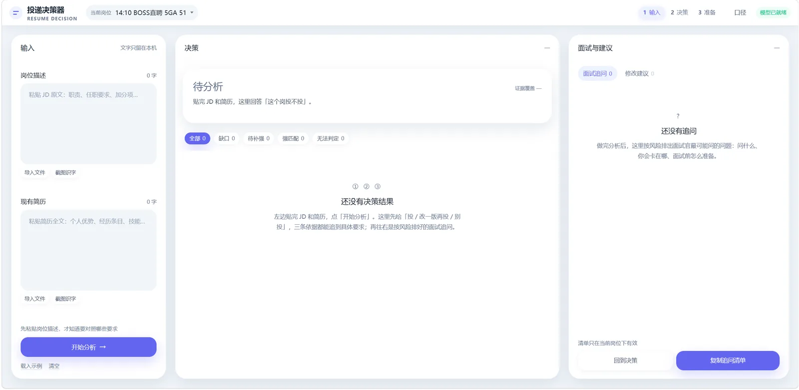
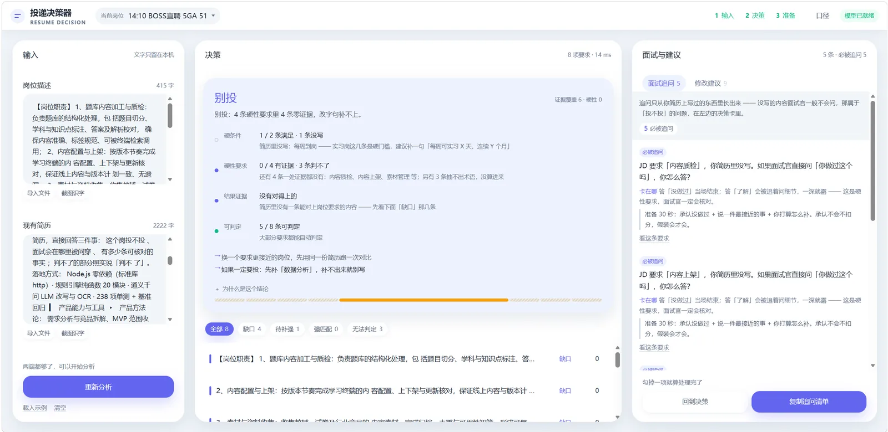

PROJECT 02 / DECISION TOOL
投递决策器
粘贴 JD 与简历，直接回答三件事：这个岗投不投、面试会在哪里被问穿、有多少条可核对的事实。判不了的部分，照实说“判不了”。这套机制可迁移到任何需要模型给出可核对结论的场景——客服知识库、内部问答、合规审查。
它解决什么
应届生投简历时真正要判断的不是“我有多匹配”，而是三件能立刻行动的事：这个岗值不值得投、面试会在哪被问穿、我有哪些能核对的事实。市面上的工具给一个“对齐度 37 分”，用户拿着这个数既做不了决定，还容易误读成录用率。
怎么做的
- 推翻自己的输出层。首版主输出是“对齐度 37 分”，内测发现没人能据此决策；引擎一行未改，只重做输出层，换成投递决策 / 面试追问 / 事实账本三件能直接行动的产物。
- 把两件事拆开。“做过类似的事吗”和“够不够格”是两层：学历、届别、到岗天数、实习时长单独做二元校验，任一不符直接判“别投”，因为改简历救不了。
- 画对劝退线。首版按 3 条缺口就劝退，会让人放弃本可拿到的机会；改成只差一两条一律给“改一版再投”，硬性要求一半以上零证据才“别投”。抽不到的条件记“没写”，不记“不满足”。
- 防编造。把事实编译成编号白名单随提示词下发，做“白名单 × 申报 × 实际文本”三方对账；申报不存在的编号即判编造、直接拦截。
- 别把过严当正确。真机验证发现过严会误毙 3 条合格改写，据此收窄口径；四组 JD 跑分钉成回归基线，238 项单测全过。
证据
238项单测，全部通过
20个纯函数规则模块
4组 JD 回归基线
另外修掉了一个“伪装成功”：OCR 长图退化到只出检测框，原先的清洗逻辑却把它变成一屏 90 分——现在这种情况会明确失败，而不是看起来成功。
规则引擎是纯函数，不联网也能出完整报告；模型只负责改写与 OCR，判断不交给它。
过程物
这个产品的核心设计决定是「责任边界」：硬性条件、证据覆盖、编号校验全部交给纯函数规则引擎，模型只负责文本改写与 OCR，输出不参与判定。完整规则、验收标准与风险登记都写在 PRD 里。
界面截图


截图来自本地运行版本，岗位与简历为示例数据。
它不做什么
不替用户编经历；不猜“没写”的条件；不给录用概率，只给能不能投和该补什么；不把关卡判断交给模型。